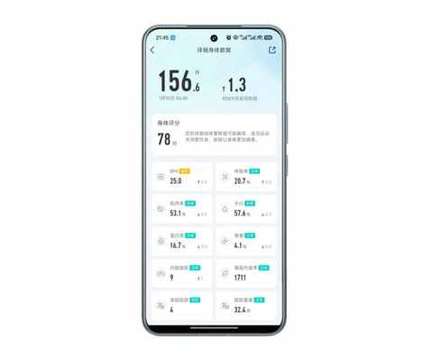
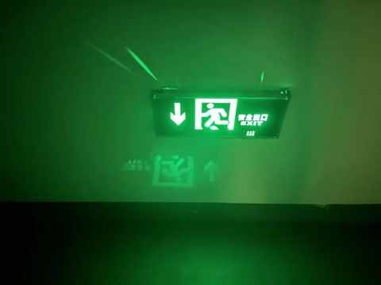
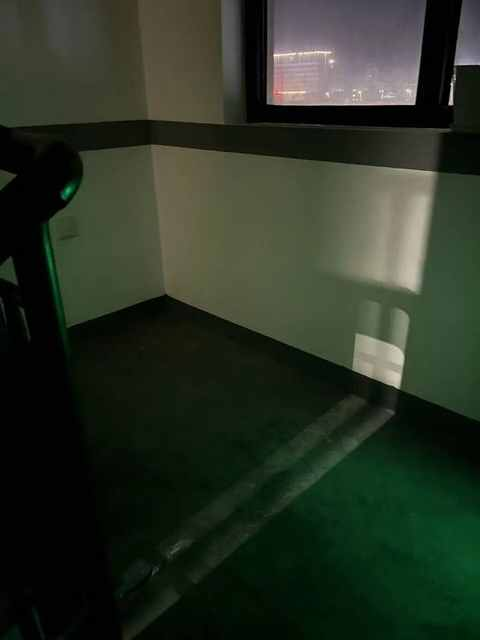

2026，中年人的自觉：学会与问题长期共存
和以往一样的是：基本每年的 12 月下旬，在朋友圈、微博、抖音、小红书等地方，能看到不少年度总结或复盘。
之前两年都有做一个简单的总结和复盘，回顾了 2023 年和 2024 年的一些事情和想法。
一个普通人的 2023 的小事记
请回答 2024，用 10 个问题回顾过去的一年
不同的是：今年突然就没有做总结和复盘的欲望和想法了，虽然和以往一样，看了不少年度总结，不过依然没有激发起分享欲，便没有做任何总结。
可能是当时刚完成 100 天日更的缘故，也可能是到了某一个年龄之后，身体的变化会直接影响到当时的所思所想。虽然没有对 2025 年做系统性总结和复盘，但在这一年期间更新 100 多篇公众号文章，这个过程极其宝贵。
12 月底到 1 月初这两三周的时间，会让人不由自主的笼罩在一个新年新气象的氛围下，很难不对 2026 年有一些期待和想法。
在那一阵子，脑中浮现了挺多的想法：如何赚钱、跑步规划、阅读计划……最终沉淀下一个最确定的想法： 学会与问题长期共存。
在步入 2026 年的第一个早晨，在时隔两个多个月之后重新站上体重秤。

结果既在意料之外也在情理之中：比预期的 80kg 轻一点，比之前保持的 74kg重一些，似乎稍有一点反弹的趋势。
下面这张照片是刚才丢完垃圾后，爬楼梯上楼的时候 用的 iPhone13 拍的，iPhone 祖传的“ 鬼影 ”存在感极强。

如果不想出现“鬼影”，避开灯光便不会出现。

站上体重秤看到数字的那一刻，和拍照时看到避不开的“ 鬼影 ”’那个瞬间，其感觉是相似的，有某种积极意义上的接纳。
我意识到，有些东西，例如体重的波动和常用设备的优缺点，与其耗费心力和它较劲，不如先看清它、接受它，再决定如何与之相处。
这便是2026年，一个普通中年人的自觉。